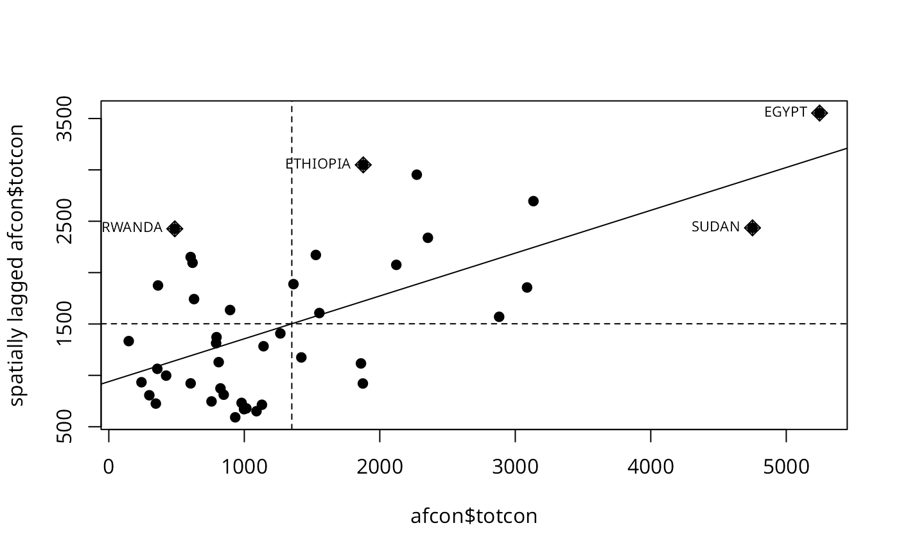
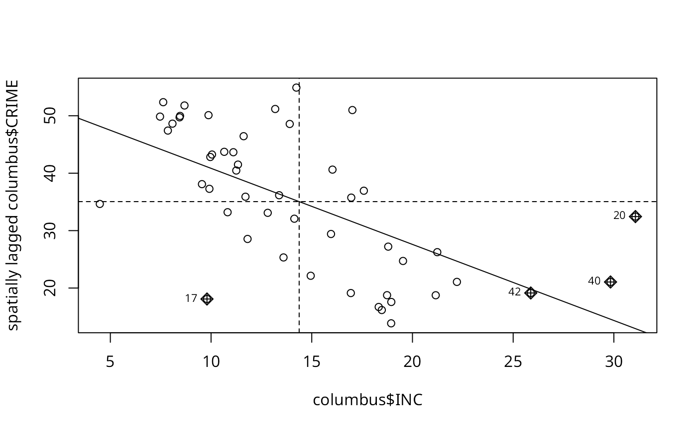
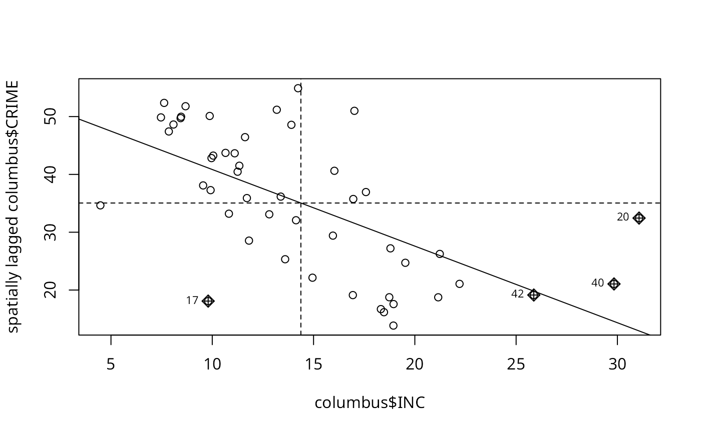

Moran scatterplot
moran.plot.RdA plot of spatial data against its spatially lagged values, augmented by reporting the summary of influence measures for the linear relationship between the data and the lag. If zero policy is TRUE, such observations are also marked if they occur.
moran.plot(x, listw, y=NULL, zero.policy=attr(listw, "zero.policy"), spChk=NULL,
labels=NULL, xlab=NULL, ylab=NULL, quiet=NULL, plot=TRUE, return_df=TRUE, ...)Arguments
- x
a numeric vector the same length as the neighbours list in listw
- listw
a
listwobject created for example bynb2listw- y
an optional numeric vector the same length as the neighbours list in listw for a bi-variate plot
- zero.policy
default
attr(listw, "zero.policy")as set whenlistwwas created, if attribute not set, use global option value; if TRUE assign zero to the lagged value of zones without neighbours, if FALSE assign NA- spChk
should the data vector names be checked against the spatial objects for identity integrity, TRUE, or FALSE, default NULL to use
get.spChkOption()- labels
character labels for points with high influence measures, if set to FALSE, no labels are plotted for points with large influence
- xlab
label for x axis
- ylab
label for x axis
- quiet
default NULL, use !verbose global option value; if TRUE, output of summary of influence object suppressed
- plot
default TRUE, if false, plotting is suppressed
- return_df
default TRUE, invisibly return a data.frame object; if FALSE invisibly return an influence measures object
- ...
further graphical parameters as in
par(..)
Value
The function returns a data.frame object with coordinates and influence measures if return_df is TRUE, or an influence object from influence.measures.
References
Anselin, L. 1996. The Moran scatterplot as an ESDA tool to assess local instability in spatial association. pp. 111–125 in M. M. Fischer, H. J. Scholten and D. Unwin (eds) Spatial analytical perspectives on GIS, London, Taylor and Francis; Anselin, L. 1995. Local indicators of spatial association, Geographical Analysis, 27, 93–115
See also
Examples
data(afcon, package="spData")
mp <- moran.plot(afcon$totcon, nb2listw(paper.nb),
labels=as.character(afcon$name), pch=19)

moran.plot(as.vector(scale(afcon$totcon)), nb2listw(paper.nb),
labels=as.character(afcon$name), xlim=c(-2, 4), ylim=c(-2,4), pch=19)
 if (require(ggplot2, quietly=TRUE)) {
xname <- attr(mp, "xname")
ggplot(mp, aes(x=x, y=wx)) + geom_point(shape=1) +
geom_smooth(formula=y ~ x, method="lm") +
geom_hline(yintercept=mean(mp$wx), lty=2) +
geom_vline(xintercept=mean(mp$x), lty=2) + theme_minimal() +
geom_point(data=mp[mp$is_inf,], aes(x=x, y=wx), shape=9) +
geom_text(data=mp[mp$is_inf,], aes(x=x, y=wx, label=labels, vjust=1.5)) +
xlab(xname) + ylab(paste0("Spatially lagged ", xname))
}
if (require(ggplot2, quietly=TRUE)) {
xname <- attr(mp, "xname")
ggplot(mp, aes(x=x, y=wx)) + geom_point(shape=1) +
geom_smooth(formula=y ~ x, method="lm") +
geom_hline(yintercept=mean(mp$wx), lty=2) +
geom_vline(xintercept=mean(mp$x), lty=2) + theme_minimal() +
geom_point(data=mp[mp$is_inf,], aes(x=x, y=wx), shape=9) +
geom_text(data=mp[mp$is_inf,], aes(x=x, y=wx, label=labels, vjust=1.5)) +
xlab(xname) + ylab(paste0("Spatially lagged ", xname))
}
 columbus <- st_read(system.file("shapes/columbus.shp", package="spData"))
#> Reading layer `columbus' from data source
#> `/home/rsb/lib/r_libs/spData/shapes/columbus.shp' using driver `ESRI Shapefile'
#> Simple feature collection with 49 features and 20 fields
#> Geometry type: POLYGON
#> Dimension: XY
#> Bounding box: xmin: 5.874907 ymin: 10.78863 xmax: 11.28742 ymax: 14.74245
#> CRS: NA
nb <- poly2nb(columbus)
listw <- nb2listw(nb)
moran.plot(x=columbus$CRIME, y=columbus$INC, listw=listw)
columbus <- st_read(system.file("shapes/columbus.shp", package="spData"))
#> Reading layer `columbus' from data source
#> `/home/rsb/lib/r_libs/spData/shapes/columbus.shp' using driver `ESRI Shapefile'
#> Simple feature collection with 49 features and 20 fields
#> Geometry type: POLYGON
#> Dimension: XY
#> Bounding box: xmin: 5.874907 ymin: 10.78863 xmax: 11.28742 ymax: 14.74245
#> CRS: NA
nb <- poly2nb(columbus)
listw <- nb2listw(nb)
moran.plot(x=columbus$CRIME, y=columbus$INC, listw=listw)
 moran.plot(x=columbus$INC, y=columbus$CRIME, listw=listw)

moran.plot(x=columbus$INC, y=columbus$CRIME, listw=listw)
